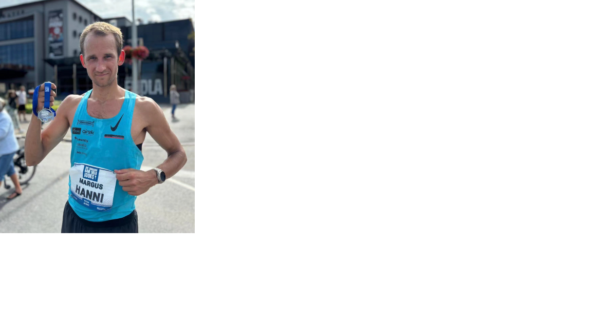

Tere! Olen Margus. Olen huvitatud tehnoloogia ja teaduse arengust. Viidan palju aega sportlikel tegevustel.
Pilt

Hobid ja huvid
- Fotograafia – loon visuaalseid lugusid kaamera objektiivi läbi
- Pikamaajooksmine – teen tippasemel, treenin ja võistlen pikkadel distantsidel
- Tehnoloogia ja teadus – jälgin uusi arenguid, loen teaduslikke artikleid ja katsetan uute lahendustega